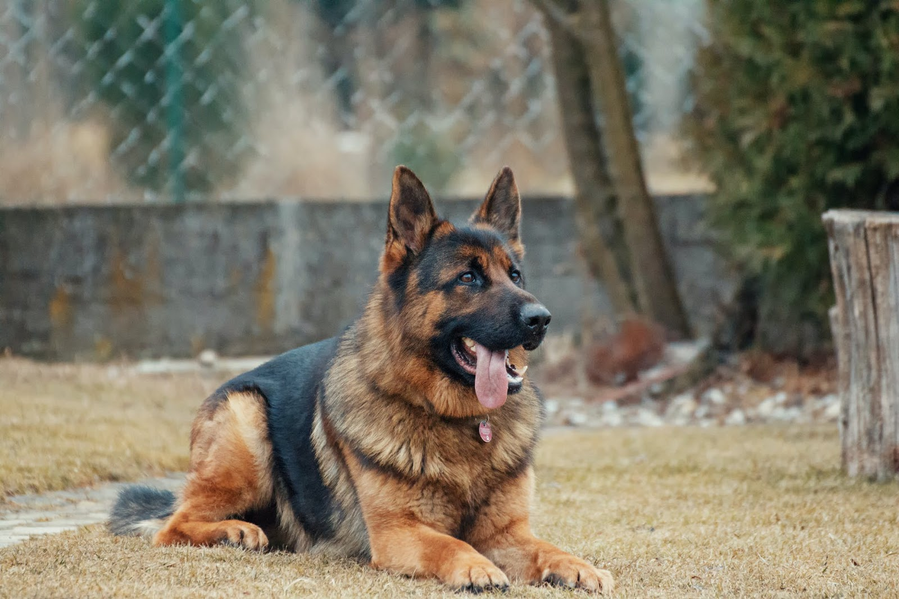
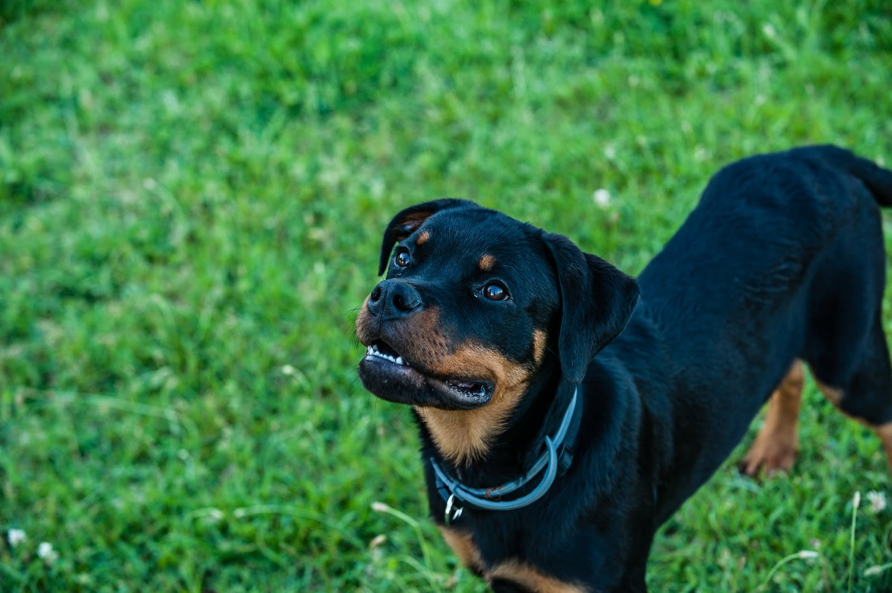
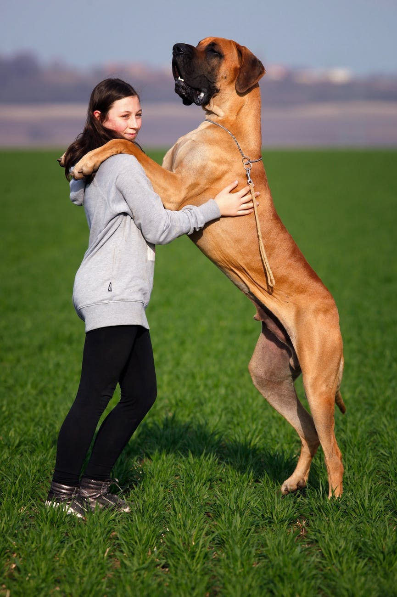
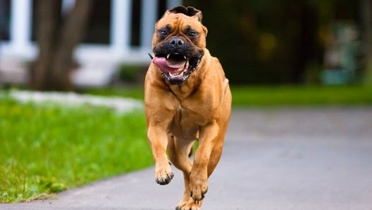

The German Shepherd is one of the highly popular dog breeds in Sri Lanka. This is no wonder as they come as a whole package. They are kind, gentle, caring, and loving. At the same time, they are loyal, intelligent, and protective. In fact, they proudly take their place among the top ten best guard dogs in the world. As you know, they are also a popular choice for Sri Lankan police dogs. Several of their features and characteristics make them good watch dogs.
They learn quickly. So, if you have your own tips and tricks you want to teach your German Shepherd, it’s not going to be a tiring job.
German Shepherds think of your kids as pups in their pack. So, they not only love kids, they also instinctively take care of them.
Their strong, loud bark is not misleading. Moreover, it will also make any intruder think twice.
They are a strong, large breed. So, it’s not going to be easy for an intruder to tackle a large, strong German Shepherd.
Rottweilers are another popular breed of dogs in Sri Lanka. Their strong jaws with their intimidating look is enough to scare off any person. In fact, Rottweilers are among the most powerful dog breeds, and they have one of the highest bite forces / strongest bites, in any dog. As a result, Rottweilers are also a popular choice for police dogs. What characteristics make them good guard dogs?
Rottweilers are of highly protective nature. They are loyal and dedicated. You can trust them not to leave their post even if there is a squirrel running around out there.
Rottweilers are affectionate towards their master. On the other hand, they do not show any friendliness towards strangers.
Rottweilers are one of the strongest dog breeds out there. In turn, they have an intense energy level. So, they need lots of exercise as well as mental stimulation. If they do not get enough of these, they tend to become aggressive and destructive.
Their intelligence makes it easier to teach them commands as they learn fast. What you need to remember is that they are stubborn, and you need to be strict so that they do not get their way.
The Great Dane is a large breed of dogs. In fact, they hold several Guinness world records for their height and size. In nature, Great Danes are charming and affectionate. They are also patient and child-friendly. Moreover, they are calm and composed. However, they will get aggressive when the situation requires it. Hence, they make excellent watch dogs that are affectionate to the family.
Their boisterous mighty bark is very intimidating, and will scare any intruders.
Their intimidating size and gaze can scare off even a non-intruder.
They are very protective of their guardian environment. If they feel something is out of the ordinary, they are quick to become aggressive in order to protect their family.
If you want a large, companionable guard dog to join your family, a Bullmastiff will be the right for you. They are massive, confident, and muscular. This breed was originally bred as watch dogs for gamekeepers and poachers.
The Bullmastiff does not bark much. Instead, they keep quiet and confront the intruder as if silently aiming for a prey. In fact, because of this nature, they have got the name “silent watchdog”.
They are massive! At the same time, this is to their advantage. They will watch an intruder in silence and then confront the intruder. Their immense size and strength, added to the abruptness of the attack, will have any intruder lying flat on the floor.
Bullmastiffs are a protective breed. Their loyalty goes to the extent of putting themselves in harm’s way to protect their family.
